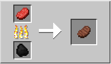
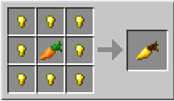

Торт

Торт (Cake) — это еда, которую можно установить на стол, пол и вообще любые поверхности, как обычный строительный блокы. Но после установки его нельзя забрать, а можно только съесть. А для того, чтобы его съесть, нужно сначала поставить торт на любой блок. Такие дела.
Рецепт: Сахар + Молоко + Яйцо + Пшеница.
Чтобы скрафтить торт, нужно потратить довольно много времени. Но иногда торт можно купить в деревне у фермера. Он продаёт 1 торт за 1 изумруд как сделку четвёртого уровня.
В общем у торта 7 кусков, при каждом нажатии исчезает по одному. Один кусок восполняет 1 единицу голода и уменьшает 0,4 истощения. Один торт может восполнить себе 7 единиц и 2,8 истощения. В отличии от другой еды, съедание каждого куска мгновенно (торт может быть съеден настолько быстро, насколько на него можно кликать) и беззвучно. Несколько игроков могут одновременно есть один и тот же торт в одно и то же время.
Торт нельзя складывать в стопки, поэтому каждая единица торта занимает отдельную ячейку в инвентаре.
Внимание!
Если попробовать разбить торт или блок под ним, торт исчезнет. Также торт исчезнет при попытке передвинуть его поршнем или липким поршнем.
Тушеный кролик
Тушёный кролик (Rabbit Stew) - очень питательная еда. Он восстанавливает 5 единиц голода и 12 насыщения. Но его компоненты более питательны, если их есть по отдельности. Так что это еда только для веселья..
Рецепт: Жареная крольчатина + Печёный картофель + Чашка + Морковь или Коричневый гриб или Красный гриб.
Жареная говядина
Жареная говядина или стейк, бифштекс - получают из мяса коров, с помощью печки. Также можно купить её у деревенских жителей.
Восстанавливает 4 единицы голода и 12,8 насыщения.

Жареная свинина
Жареная свинина (Cooked Porkchop) — это сырая свинина, приготовленная в печке. Вместе с жареной говядиной и жареной курицей — жареная свинина самый легкодоступный продукт, так как вам не придется тратить много времени на возделывание посадок ради хлеба или тратить костную муку на выращивание огромных грибов для получения тушёных грибов.
Также жареная свинина выпадает из обычной свиньи, если она сгорела в огне.
Восстанавливает 4 единицы голода и 12,8 насыщения.
Тыквенный пирог

Тыквенный пирог (Pumpkin Pie) — еда, которую можно скрафтить из тыквы. В отличие от остальной еды, подобно тушёным грибам, может быть сделан в инвентаре, без использования верстака или печки.
Восстанавливает 4 единицы голода и 4,8 насыщения. Это больше, чем у торта и сырых рыбы и мяса, но меньше, чем у тушёных грибов и значительно ниже, чем у приготовленного мяса.
Рецепт: тыква, яйцо и сахар. Все необходимые ингредиенты для тыквенного пирога можно найти буквально под ногами.

Тушеные грибы

Тушёные грибы (или грибной суп) (Mushroom Stew) - это продукт, который можно приготовить из красных и коричневых грибов. Для крафта также нужна деревянная миска, которую можно скрафтить из трёх кусков обработанной древесины.
Грибы встречаются нечасто, но их можно выращивать в темном месте. Имея на руках хотя бы по одному грибу каждого вида, можно выращивать их с помощью костной муки. Тушёные грибы, в отличие от исходных компонентов, не складываются, поэтому при выборе грибов в качестве еды рекомендуется носить с собой грибы каждого вида и чашку, и крафтить еду при необходимости.
Восстанавливает 3 единицы голода и 7,2 насыщения.
Тушёные грибы также можно получить, применив пустую чашку на грибной корове.
Свекольный суп
Свекольный суп (Beetroot Soup; или «Свекольник», «Борщ») — тип еды, добавленный в карманное издание в сборке 0.8.0 build 2. В ПК версию был добавлен в версии Minecraft 1.9.
Восстанавливает 3 единицы голода и 7,2 насыщения. Свеклу можно найти в деревне.
Рецепт: 6 свекол и 1 деревянная миска.
Золотая морковь
Золотая морковь (Golden Carrot) — еда, получаемая путем крафта. Является ингредиентом при создании зелья ночного зрения. Золотая морковь — это еда с наивысшим параметром насыщения (14.4 единиц). Также может использоваться для размножения лошадей.
Восстанавливает 3 единицы голода и 14,4 насыщения.

Жареная баранина
Жареная баранина (англ. Cooked Mutton) — еда, которая получается из сырой баранины, приготовленной в печи. Также жареная баранина выпадает из обычной овцы, если она сгорела в огне. Восстанавливает 3 единицы голода и 9,6 уровня насыщения.
Печёный картофель
Печёный картофель (Jacket Potato) - питательная и вкусная еда, которую можно получить, запекая картофель в печи.
Чтобы съесть печёный картофель, нажмите и удерживайте кнопку использования, когда он выбран в хотбаре. Съедание одного восстанавливает 5 единиц голода и 7,2 единиц насыщения.
Жареная курятина
Жареная курятина (Cooked Chicken) восстанавливает 3 единицы голода и 7,2 насыщения. Её можно купить у деревенских жителей или получить, запекая куриное мясо в печи. Жаренную курятину, как и сырую, можно складывать в стопки размером до 64 единицы.
Жареную курятину можно также получить, если поджечь куриц огнивом, или использовав ведро лавы на блок, где стоит курица и тут же убрать.
Жареный лосось
Разновидность рыбы, которую можно поймать и запечь в печке. По сравнению с обычной рыбкой, лосось более питателен. Но и ловится он реже.
Восстанавливает 3 единицы голода и 7,2 насыщения
Жареная крольчатина
Жареная крольчатина (Cooked Rabbit) — это пища, которая получается из сырой крольчатины, приготовленной в печи. Также жареная крольчатина выпадает в количестве 0-1 штука из обычного кролика, если он сгорел в огне.
Восстанавливает 2.5 единицы голода и 6 насыщения
Жареная рыба
В любом водоёме можно поймать рыбу с помощью удочки. Ловится она нескольких видов - обычная рыба, лосось, рыбка-клоун (как Немо) и иглобрюх (рыба-шар). Первые две рыбы можно запечь в печке, остальные две - нет. Кроме еды, рыбу можно использовать для приручения и размножения кошек.
Обычная жареная рыба восстанавливает 2.5 единицы голода и 6 насыщения
Рыбалка является надёжным, быстрым источником пищи, а игроку не нужно ждать, пока появятся свиньи, коровы или созреет посаженная пшеница. Нужна только удочка, которую можно скрафтить из 3 палок и 2 нитей. Нити выпадают из паука, а пауки появляются каждую ночь - так что если есть оружие, можно сходить на охоту за пауками и наделать себе удочек.
А еще рыбу можно получить убив стража или древнего стража.
Хлеб
Хлеб (Bread) можно скрафтить из пшеницы, а можно найти в сундуках в сокровищницах, заброшенных шахтах и деревнях, а также в бонусном сундуке.
Как сделать хлеб:
- Выбить семена пшеницы из обычной травы или другой пшеницы
- скрафтить мотыгу
- вспахать мотыгой поле около воды
- посеять семена
- дождаться урожая и выбить из зрелой пшеницы колосья
- наконец, скрафтить хлеб на верстаке.
Из 3 колосьев получается 1 хлеб. Выращивание пшеницы является долгим, но зато надёжным способом добычи пищи. Ты можешь посадить семена и уйти в шахту, а потом вернуться через некоторое время и собрать урожай с семенами, в дальнейшем посадив ещё больше семян. Это обеспечивает непрерывную добычи еды.
1 хлеб восстанавливает 2.5 единицы голода и 6 насыщения.
Хитрость - подземная пшеница
Можно выкопать в шахте или под землей специальную пещеру и хорошо ей осветить, а затем сделать резервуар с водой (1 блока достаточно). Главное - покрыть пол пещеры землей, и тогда на ней тоже можно выращивать пшеницу в шахтах!
Морковь
Морковь (Carrot) - еда, которую можно вырастить, выбить из зомби (редко) или выторговать в деревне (или выкопать её там же). Её можно легко выращивать на вскопанной и освещенной земле рядом с водой. При сборе с грядки выпадает от 1 до 4 единиц моркови.
Восстанавливает 2.5 единицы голода и 4,8 насыщения.
Морковь используется для размножения свиней и кроликов, а из моркови и удочки можно сделать удочку с морковью, с помощью которой можно управлять свиньями. Для быстрого выращивания на грядке можно использовать костную муку. При добыче моркови инструментом с чарами «Удача» количество выпадающей моркови увеличивается.
Из обычной морковки можно скрафтить золотую, которая используется для создания зелья ночного зрения и размножения лошадей.
Золотое яблоко

Золотое яблоко (Golden Apple) - это не только еда, но и лекарство. Восстанавливает здоровье за 4 секунды! Как еда - золотые яблоки утоляют по 2 единицы голода и 9,6 насыщения. Золотое яблоко можно есть даже при полном индикаторе сытости.
Золотое яблоко можно использовать на зомби-жителе под эффектом слабости, нажав правую клавишу мышки. Это через некоторое время приведет к его исцелению и превращению в деревенского жителя.
Золотые яблоки можно найти с шансом 100% в иглу (снежная хижина в тундре) или с малым шансом (около 0,66%) в сокровищнице или крепости. Проще всего сделать золотое яблоко самому.
Рецепт: 8 золотых слитков и 1 красное яблоко.
Еще есть зачарованное золотое яблоко. Его можно найти в сундуках крепостей и храмов.
Оно обладает намного более мощным эффектом: очень быстрая регенерация здоровья на протяжении 30 секунд, защита от огня, снижение урона игроку в течение 5 минут и Поглощение на 2 минуты. Зачарованное золотое яблоко отличается от обычного по сиянию, характерному для зачарованных предметов, и пурпурной подписи.
Красное яблоко

Яблоко (Apple) — еда, выпадающая из дубов и тёмных дубов. Если срубить дерево, то через некоторое время, когда начнет исчезать листва, могут появляться яблоки. Это происходит редко, в среднем 1 яблоко на 200 блоков листвы.
Ещё яблоко можно найти в сундуках сокровищницы или крепости. Его можно купить при торговле в деревне. А еще оно иногда генерится в бонусном сундуке (опция, которую можно поставить при запуске игры)
Восстанавливает 2 единицы голода и 2,4 насыщения.
Из яблока можно изготовить золотое яблоко, которое помогает разводить лошадей, и зачарованное золотое яблоко.
Плод коруса
Плод коруса (Chorus Fruit) — еда, которая выпадает при разрушении растения коруса, которое растет на дальних островах Края. Так же, как и у кактуса и тростника, при удалении нижнего блока верхние осыпаются.
Восстанавливает 2 единицы голода и 2,4 насыщения. Но самое главное - при этом телепортирует игрока в случайное место на поверхности в радиусе ±8 блоков, на манер телепортации странника Края.
Плод имеет секундную задержку перед повторным использованием. При этом его иконка побелеет. В отличие от жемчуга Края не отнимает здоровье при телепортации. Поедание плода в воздухе телепортирует на поверхность. Это позволяет избегать урона от падения при битве с шалкерами (мобы в Крае), однако ему не стоит доверять на все 100%. Иногда можно получить весь урон от падения, иногда не получить его вообще. Плод коруса также помогает быстро избежать атакующего противника. Не рекомендуется использовать, если поблизости есть лава. Не работает под водой на глубине и на поверхности.
Плюсы - съев плод, можно быстро избежать агрессивного противника. Плод коруса легко и быстро добывается рукой, в большом количестве.
Минусы - труднодоступен: необходимо попасть в Край через портал, который нелегко найти, и убить дракона, чтобы попасть на дальние острова Края, где он и произрастает.
Гнилая плоть
Восстанавливает 2 единицы голода и 0,8 насыщения.
Гнилая плоть ( Rotten Flesh) выпадает из зомби и Зомби-свиночеловека. Утоляет голод, но при этом с вероятностью 80% вызывает отравление.
Отравление можно ликвидировать молоком. Гнилую плоть лучше использовать в качестве пищи тогда, когда вы находитесь в безопасности, либо скармливать её волкам. Жители - священники покупают гнилую плоть, за одну стопку вы можете получить пару изумрудов.
Плюсы
- Легко добывается: имея броню и любой меч или лук, вы сможете, при должной сноровке, без проблем убивать зомби, так как они являются достаточно слабыми противниками. В крайнем случае можно подождать, пока они сами сгорят на солнечном свете.
- Легче найти зомби, чем дружелюбных мобов или вырастить пшеницу/арбуз/прочую еду. Тем более дружелюбные, в отличие от агрессивных мобов, спаунятся реже.
- Идеальна для ситуации, когда вся еда кончилась — обычно, бродя по шахтам и убивая мобов, вы накапливаете много дропа, в том числе с зомби (особенно если вы нашли сокровищницу). Употребляйте сразу несколько штук, чтобы «перебить» эффект голода (время действия не суммируется), а ещё лучше, после трапезы, запить всё молоком.
Минусы
- Восстанавливает только 2 пункта сытости, если учесть голод — 1.5 (если вы во время действия эффекта не двигаетесь).
- Менее выгодно, чем любое другое мясо.
- Тяжело добыть при отсутствии экипировки/здоровья.
Сырая говядина
Сырая говядина (Raw Beef) выбивается из коров. Её можно испечь в печи, создав жареную говядину. Жареную говядину можно также получить, если поджечь коров огнивом, или использовав ведро лавы на блок, где стоит корова и тут же убрать.
Сырая говядина восстанавливает 1.5 единицы голода и 1,8 насыщения. Жареная намного лучше.
Сырая крольчатина

Восстанавливает 1.5 единицы голода и 1,8 насыщения.
Сырая крольчатина (Raw Rabbit) иногда выпадает из кроликов при смерти. В печи её можно испечь, таким образом получив жареную крольчатину.
Сырая свинина
Восстанавливает 1.5 единицы голода и 1,8 насыщения.
Сырая свинина (Raw Porkchop) выпадает из убитых свиней в количестве 1-3 кусков. В отличие от сырой курятины, сырая свинина не может вызвать несварение (отравление), но, будучи пожаренной в печи, восстанавливает больше сытости.
Ломтик арбуза
Восстанавливает 1 единицу голода и 1,2 насыщения.
Ломтик арбуза (Melon) выпадает при разрушении растущего арбуза в количестве от 3-х до 7-и. Из ломтиков можно получить семена для дальнейшего выращивания арбузов. Также используется при создании сверкающих ломтиков арбуза.
Плюсы
- Быстро растет.
- Можно сделать автоматическую ферму
- Сверкающие ломтики арбуза позволяют варить зелья лечения.
Минусы
- Восстанавливает только одну единицу голода, что затрудняет попытки подкрепиться во время боя.
- Невозможно выращивание с помощью костной муки, так как влияет только на рост стебля, но не самих арбузов.
Сырая курятина
Восстанавливает 1 единицу голода и 1,2 насыщения. С высокой вероятностью может вызвать отравление (несварение), так что лучше всегда жарить.
Сырая курятина (Raw Chicken) выпадает из куриц при смерти. В печи её можно испечь, таким образом создав жареную курятину, которая насыщает больше.
Сырая рыба
Восстанавливает 1 единицу голода и 1,2 насыщения. Никаких побочных эффектов.
Сырой лосось
Восстанавливает 1 единицу голода и 1,2 насыщения
Печенье
Восстанавливает 1 единицу голода и 0,4 насыщения
Печенье (Cookie) — еда, которую легко получить, если есть какао-бобы. Какао-бобы можно выбить из блоков какао, которые растут в джунглях. То есть печенье легко крафтится в джунглях, а в остальных биомах - это редкий деликатес.
Рецепт: Пшеница + Какао-бобы
Сырая баранина
Восстанавливает 1 единицу голода и 1,2 насыщения
Сырая баранина выпадает из овцы. Может выпасть от 1 до 3 сразу. Может выпасть больше, если использовать оружие с зачарованием «Мародёрство»
Паучий глаз
Восстанавливает 1 единицу голода и 3,2 насыщения. Вызывает отравление.
Паучий глаз (Spider Eye) выпадает из пауков. Глаз паука может быть приготовлен, и в таком виде используется в зельеварении для создания Непримечательного зелья. Также обычно меняет эффекты других зелий, но некоторые вредоносные становятся ещё вредоноснее. Если закусить гнилую плоть (после окончания несварения) двумя паучьими глазами и пересидеть отравление, замуровавшись в безопасном месте - можно полностью восстановить уровни еды и здоровья, будучи в сложном положении в пещере без возможности выхода. Таким образом, скитаться по пещерам без еды в поисках выхода можно неограниченно долго, при условии хороших боевых навыков.
Ядовитый картофель
Восстанавливает 1 единицу голода и 1,2 насыщения. Часто вызывает отравление на 4 секунды.
Схож с обычным картофелем, но его нельзя испечь или посадить. Ядовитый картофель иногда выпадает при сборе картофеля (2% шанс) в количестве 0-2 или из зомби.
Интересно то, что ядовитый картофель восстанавливает больше единиц голода, нежели обычный. Пятна на ядовитом картофеле, вероятно, аналогичны реальному заболеванию картофеля — солнцебоине.
Свёкла
Восстанавливает пол-единицы голода и 1,2 насыщения.
Свёкла (Beetroot) — еда, которую можно съесть, вырастить на грядке и использовать для свекольного супа.
Свёклу можно получить при разрушении полностью выращенного блока ростков, который дропает свёклу и семена свёклы. Эти ростки можно найти в деревнях.
Свёклу можно использовать для разведения свиней. Если игрок держит в руке свёклу, свиньи будут следовать за ним.
Картофель
Картофель (Potato) восстанавливает пол-единицы голода и 0,6 насыщения. Его лучше запечь в печи, и тогда он станет очень питательным.
Картофель можно садить на грядки и разводить, подобно пшенице или моркови. После созревания с 1 грядки можно получить 1-4 единицы картофеля.При сборе существует шанс (2%) выпадения ядовитого картофеля. Иногда картофель можно выбить как редкий дроп из зомби, а также найти на грядках в деревнях.
Для моментального созревания картофеля на грядке можно использовать костную муку. Зачарованные заклинанием «Удача» инструменты не приведут к выпадению большего количества урожая.
Рыба-клоун

Восстанавливает пол-единицы голода и 0,6 насыщения.
Иглобрюх
Восстанавливает пол-единицы голода и 0,6 насыщения.